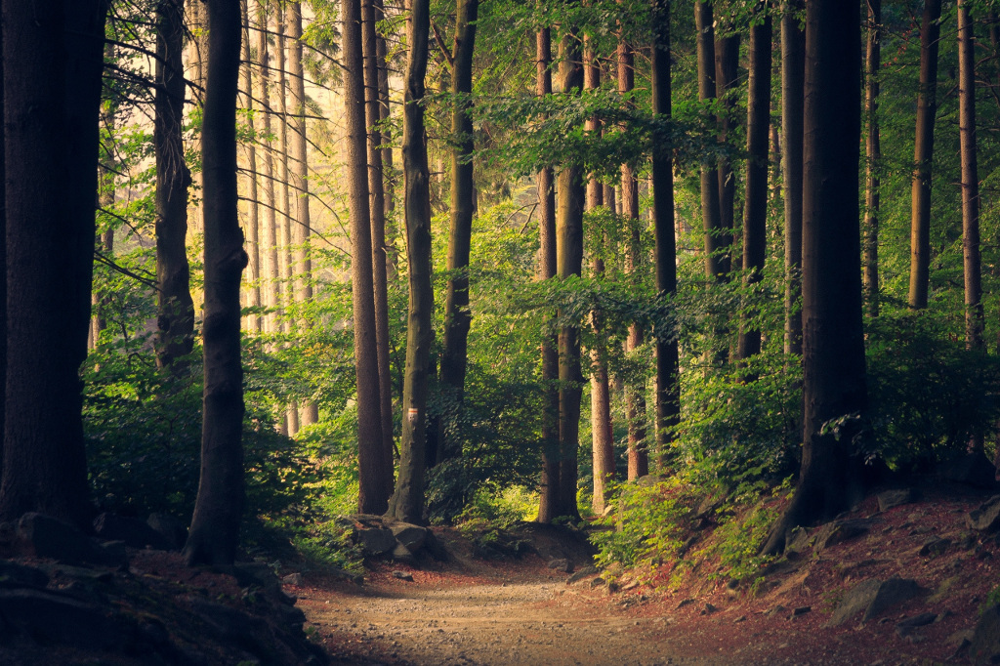

februari 2019
Je leest dit blog om je brein en je ego eens lekker uit te dagen, om op een andere manier naar jezelf en je omgeving te kijken. Probeer ruim te denken, stappen te volgen en je bewustzijn te vergroten om deze uitdaging aan te gaan. Op weg naar zelfrealisatie.
Hoe groot is jouw ego? Wat kun je werkelijk betekenen voor iets of iemand? Het antwoord daarop is niets. Je kunt niets doen en juist door niets te doen, ga je heel veel doen.
Neem de aarde bijvoorbeeld. Wat kun je doen aan klimaatverandering? Natuurlijk, we kunnen minder vervuilen, we kunnen beter voor de aarde zorgen. Maar kijk eens verder dan dat. Bomen planten om CO2 te compenseren bijvoorbeeld, dat klinkt goed, moeten we doen. Maar dat klinkt alsof bomen zichzelf niet kunnen voortplanten. Doe eens niets. Moet je kijken hoe snel er nieuwe bomen zijn, moet je kijken hoe snel je tuin overladen is met groen als je een jaartje niet tuiniert. Je denkt al snel dat je iets moet doen, omdat het goed is, maar voor wie? Voor de aarde of voor je ego? Denk je echt dat jij de aarde moet redden, alsof de aarde dat zelf niet kan. Of wil je de aarde redden voor je eigen veiligheid? Blijf er gewoon eens af en kijk wat er gebeurd.

... Let nu even op je ademhaling, adem je zachtjes in en uit? Wees je bewust van je ademhaling en ga weer verder met lezen...
Ga eens voorbij je denken, voorbij je ego. Wie ben jij dat je iets kunt doen? Zet je gedachten eens opzij. Stop eens met dingen doen.
Als je niets doet of bovenstaande leest kun je rustig worden, maar je ego wordt onrustig, je vindt er iets van, het spreekt je aan of je vindt het maar onzin, dat kan en mag allebei. Maar realiseer je, dat je door de inhoud van je gedachten gedreven wordt. Met meditatie kun je die gedachten temmen. Dan vergroot je bewustzijn en ga je de dingen vanuit een ander perspectief zien en kijk je niet meer naar de inhoud van je gedachten. Daarin zijn verschillende stadia. Om te beginnen stap 1 en 2: eerst leer je je gedachten observeren en zie je dat je met gedachten problemen kan gaan oplossen. Daarna ga je zien dat er geen problemen zijn, maar dat de kennis er wel is. Maar beiden werken het ego in de hand. Want als je problemen kunt gaan oplossen, dan ga jij dat natuurlijk wel even doen. En als er kennis is, dan wil je die inzetten natuurlijk.
Je kunt je bewustzijn nog verder vergroten, ... ben je je nog bewust van je ademhaling?....
Dan volgt stap 3, achter de kennis zit een gevoel van gelukzaligheid. Het besef dat alles goed is, zoals het is. Het probleem is er, de oplossing is er, de kennis is er. Je hoeft er alleen niets meer mee. Daar kun je gewoon aanwezig zijn. Daar is alleen rust, vriendelijkheid en liefde. Door in dat bewustzijn te zitten verspreid je die eigenschappen. Je kunt daarin anderen opnemen, zelfs de aarde, dan doe je niets en je heelt iedereen.
Dat is het ultieme wat je kunt doen, je kunt je bewustzijn vergroten, waardoor je omgeving zich daaraan aanpast en ook hun gelukzaligheidsgevoel wordt vergroot. Dat doe je door enkel aanwezig te zijn. Alles wat je op fysiek vlak daarbij doet heeft geen enkele aanvullende betekenis.
Je bewustzijn vergroten, tot hoever gaat dat dan? In stap 4 blijf je aanwezig, in diepe meditatie, en uiteindelijk blijft er licht en geluid over, de allesomvattende essentie van iedere creatie. Het bewustzijn dat hier ontstaat komt na regelmatige beoefening van meditatie. Je hebt het licht gezien. Vervolgens kun je met dat licht aan de slag, de wereld verbeteren, anderen ook het licht laten zien bijvoorbeeld. Maar waar ben je dan mee bezig? Zelfs in deze bewustzijnstoestand ben je zelf nog afgescheiden van de rest. Je vindt kennelijk dat de wereld verbeterd kan worden. Maar let op hier, je bent nog steeds aan het doen. Het blijft alsof de lamme de blinde helpt.
Uiteindelijk realiseer je je dat je niet afgescheiden bent van de rest. Stap 5 laat zien dat jij het licht bent. En tegelijkertijd realiseer je je dat iedereen het licht is, dus die ander ook! Die ander waarvan jij dacht dat die geholpen moest worden is al het licht, er is niets aan te vullen. Wat kun je dan nog voor iemand betekenen? Het feit dat het ego zich niet bewust is van het licht, betekent niet dat de persoon het licht niet is. Daar is werkelijk niets te doen, alles is al gedaan.
Dan is er echte overgave. Dan is het cirkeltje rond en lijkt er niets te resteren. Het is goed zoals het is, alles en iedereen! Gek genoeg begint het dan pas, je karma yoga. Doen wat nodig is. Doen wat ingegeven wordt, vanuit je intuïtie volg je het licht. Dan is het echte dienstbaarheid geworden. Dan word je dankbaar en kun je je ego voor eens en voor altijd opzij zetten en werkelijk iets voor jezelf en de wereld betekenen. En misschien ga je dan alsnog die bomen planten op de aarde. Alleen doe je dat, omdat dat is wat je doet en om geen enkele andere reden.
Het ego zit in de weg. Het is erg lastig dat wij als mens onszelf zo belangrijk vinden en dat we vinden dat er dingen verbeterd kunnen worden. Gelukkig is het niet onmogelijk je bewustzijn te vergroten en daardoor je ego te verminderen en jezelf beter te leren kennen.
Je denkt dat je zoveel weet. Maar zolang je denkt dat je het weet, ben je nog aan het denken. Als je accepteert dat je nog niet zoveel weet. Dan ben je al een stukje verder. Maar ook dit is denken. Als je toegeeft dat er niets te weten is, dan kun je voorbij denken. Dan is denken niet nodig en kun je naar intuïtie overstappen. Dan gebruik je het denken alleen nog om je intuïtie te verklaren. Zo kun je van het denken overstappen naar kennis, daarna naar liefde en uiteindelijk naar puur aanwezig zijn.
Die stadia kun je bereiken met meditatie. Heel erg tastbaar is dat niet, als je dat nog niet ervaren hebt. Naast je meditatie kun je het ook oefenen en dan zijn dienstbaar en dankbaar misschien wel de sleutelwoorden. Wees dankbaar als je iets kunt doen, of je er nu zin in hebt of niet, dat doet niet ter zake, het gaat erom dat je het kunt doen. Leer daarvan, van iedere situatie. En wees tegelijkertijd dienstbaar als je iets doet. Doe iets niet om je ego te vergroten, maar om jezelf te leren kennen. Want je hebt een beeld van jezelf, je vindt er iets van. Je ziet een lichaam, gedachten, gevoel, allemaal een interpretatie van jezelf. Probeer de situaties te gebruiken om uit te vinden wat er achter het beeld van jezelf schuil gaat. Als je dat ontdekt, dat is zelfrealisatie. Niet meer afgescheiden zijn van jezelf, maar jezelf kennen, jezelf zijn.
Lees meer BOE blogs
Neem contact op
Ga naar www.ssstil.nl, met onze yogalessen vergroot je stap voor stap je bewustzijn om de inzichten zelf te realiseren.